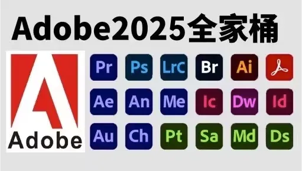

Adobe 2025全家桶(Photoshop2025中文破解版+安装教程v26.0)
众所周知，Adobe系列软件每年都会进行一次大更新，给用户提供更加丰富便捷的功能操作，为了方便各位用户下载Adobe 2025版的软件，本站为大家提供了Adobe 2025全家桶，里面包含了图像处理软件adobe photoshop 2025、视频处理软件Adobe Premiere Pro 2025、图形绘制软件Adobe Illustrator 2025、音频处理软件Adobe Audition 2025等Adobe 2025系列软件，能够满足不同人员使用需求，欢迎有需要的用户们免费下载体验吧。

主要变化：
1. Photoshop：图像编辑与生成的革命
- 继续更智能的生成式填充/扩展（Generative Expand）： 精度更高，生成的图像与原始画面的风格、光照、纹理完全一致，几乎无法分辨。 “生成式图层”（Generative Layers）： 可能允许用户通过文本提示直接生成独立的、可编辑的图层元素，并自动匹配画面的透视和光影。视频生成功能初探： 可能引入基于静态图片生成极短视频片段（如让水流流动、让云彩飘动）的早期功能。AI驱动的工作流自动化： 更复杂的任务（如精确抠图、色调统一、批量修图）可能只需一个指令即可完成。
2. Premiere Pro & After Effects：视频创作的智能化飞跃
- 文本驱动视频编辑（Text-Based Editing）： 功能强化，不仅能通过文本剪辑视频，还可能通过文本指令添加转场、特效、调整节奏。生成式音效/配乐（Generative Audio）： 根据视频内容自动生成或推荐匹配的背景音乐和音效。更强的对象追踪与移除： AI能更轻松地追踪复杂场景中的多个物体，并无痕移除不需要的物体（如电线、路人），甚至能生成填充被遮挡的背景。AI色彩匹配与分级： 一键将一段视频的色调风格应用到另一段视频上，且效果极其精准。Firefly视频模型集成： 可能会引入基于文本生成视频片段（Text-to-Video）的功能，或者使用AI为现有视频补帧、提升分辨率。
3. Illustrator：矢量设计的AI革命
- 生成式矢量图形（Generative Vector）： 通过文本描述直接生成可无限放大的矢量图标、图案、插画元素。AI辅助排版与布局： 根据设计主题和内容自动推荐或生成美观的版式布局。智能形状操作： 更直观地使用自然语言修改和组合形状（例如：“让这个圆形变成波浪边缘，并把它变成红色的霓虹灯效果”）。
4. 跨平台与协作功能
- Web版应用增强： Photoshop、Illustrator等工具的网页版将获得更多核心功能，让协作和轻度编辑更方便。实时协作升级： 更像Figma和Google Docs，多名设计师可以同时在同一个.psd或.ai文件上工作，并看到彼此的光标和实时修改。“创意云”生态系统深化： 资产、字体、颜色样式、AI模型在所有Adobe应用中的同步和共享更加无缝。
5. 3D与AR领域
- Substance 3D套件集成AI： 通过文本生成3D材质、纹理，甚至简化3D建模流程。Dimension/Aero更新： 更容易地将3D对象置入真实世界的视频或图像中，用于AR和电商展示。